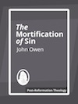
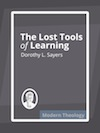

-
Cur Deus Homo
St. Anselm of Canterbury
"How great a thing it is, also, for God and man to unite in one person, that, while the perfection of each nature is preserved, the same being may be both God and man! Who, then, will dare to think that the human mind can discover how wisely, how wonderfully, so incomprehensible a work has been accomplished?" Cur Deus Homo, translated "Why God-Man?", refers to the question of the nature of Christ's incarnation. In this fictional philosophical dialog between Anselm and Boso, a monk in Normandy, this question is handled masterfully and is arguably the first complete exposition of the doctrine of substitutionary atonement. This electronic edition features an active table of contents. Cur Deus Homo is part of The Fig Classic Series on Medieval Theology.
-
Pilgrim's Progress
John Bunyan
"This hill though high I covent ascend; The difficulty will not me offend; For I perceive the way of life lies here. Come, pluck up, heart; let's neither faint nor fear." Pilgrim's Progress is considered one of the most significant works of English religious literature. Though written in the 17th century, this spiritual allegory of Christian's arduous journey to the World To Come has captivated readers for over 300 years. John Bunyan's vivid imagery and rich English style will delight readers both young and old. This edition features an active table of contents. Pilgrim's Progress is part of The Fig Classic Series on Post-Reformation Theology.
-
Syntax of the Moods and Tenses in NT Greek
Ernest De Witt Burton
Originally published in 1898 as the third edition of Burton's seminal work on Greek grammar, it remains today as a must-have handbook for the serious Greek student. In it, Burton delves into each mood and tense and cogently elucidates details of the Greek verbs while providing helpful scripture references as examples. Burton describes this handbook: "Its main purpose is to contribute to the interpretation of the New Testament by the exposition of the functions of the verb in New Testament Greek, so far as those function are expressed by the distinctions of mood and tense." In this digital edition, the table of contents has been reformatted specifically for reading devices. In addition, links have been made for intra-book references allowing for quick and in-depth researching (including all appendix matter).
-
Institutes of the Christian Religion
John Calvin, Translation by Henry Beveridge, Introduction by John Murray
"Such is pure and genuine religion, namely, confidence in God coupled with serious fear - fear, which both includes in it willing reverence, and brings along with it such legitimate worship as is prescribed by the law." —Institutes 1.2.2. Institutes of the Christian Religion is considered John Calvin's magnum opus and a groundbreaking systematization of Protestant theology. The first edition was written in 1536 as a brief summary of Christian teaching, but because of the demand by 1559 — Institutes grew into the four-volume set that we know today. This classic translation by Henry Beveridge from Calvin's 1559 Latin edition is provided in its entirety here in one digital edition. This digital edition has been made specifically for quick navigation and browsing. Additionally, it also features active footnotes, and a special introduction by John Murray. Institutes of the Christian Religion is part of The Fig Classic Series on Reformation Theology.
-
On the Christian Life
John Calvin
"This, therefore, let us never cease to do, that we may daily advance in the way of the Lord; and let us not despair because of the slender measure of success. How little soever the success may correspond with our wish, our labour is not lost when to-day is better than yesterday, provided with true singleness of mind we keep our aim, and aspire to the goal, not speaking flattering things to ourselves, nor indulging our vices, but making it our constant endeavour to become better, until we attain to goodness itself." On the Christian Life became popular as it became clear that many were curious about Calvin's theology regarding the Christian life. In this accessible booklet, Calvin begins first by speaking about the marks of a true Christian, namely a "special love for righteousness." He then moves on to Christian discipleship and meditation upon the future life. And lastly, Calvin speaks in pragmatic terms regarding the exercises of these truths. This enriching treatment of the Christian life is sure to encourage biblical and robust Christian piety. This electronic edition features an active table of contents. On the Christian Life is part of The Fig Classic Series on Reformation Theology.
-
At the Pulpits of Northampton
Jonathan Edwards
"Therefore, let every one that is out of Christ, now awake and fly from the wrath to come. The wrath of Almighty God is now undoubtedly hanging over a great part of this congregation: Let every one fly out of Sodom: 'Haste and escape for your lives, look not behind you, escape to the mountain, lest you be consumed.'" Jonathan Edwards (October 5, 1703 — March 22, 1758) was a preacher, theologian, and missionary to Native Americans. Widely acknowledged to be America's most important philosophical theologian and greatest intellectuals, Edwards played a critical role in shaping the First Great Awakening, and oversaw some of the first fires of revival in 1733-1735 at his church, First Church, in Northampton, Massachusetts. This edition is a compilation of 43 sermons including Sinners in the Hands of an Angry God and a group series of sermons on charity. This edition also features an active table of contents. At the Pulpits of Northampton is part of The Fig Classic Series: At the Pulpit.
-
Sinners in the Hands of an Angry God
Jonathan Edwards
"You have offended him infinitely more than ever a stubborn rebel did his prince; and yet it is nothing but his hand that holds you from falling into the fire every moment ... And now you have an extraordinary opportunity, a day wherein Christ has thrown the door of mercy wide open, and stands in calling and crying with a loud voice to poor sinners; a day wherein many are flocking to him, and pressing into the kingdom of God." Guest preaching at a church in Connecticut, Jonathan Edwards delivered this sermon titled, Sinners in the Hands of an Angry God. Sinners is an iconic sermon which characterizes both the times and the climate in New England during the Great Awakening and provides a unique glimpse into the theology of American Puritanism during the mid-18th century. Edwards' sometimes called "fire and brimstone" style of preaching was a well-known approach and would even render some benefit today for churches struggling with entrenched attitudes of spiritual lethargy. This electronic edition has been specially formatted for digital reading devices. Sinners in the Hands of an Angry God is part of The Fig Classic Series on Early Modern Theology.
-
The Marrow of Modern Divinity
Edward Fisher
"There is no question but every spiritual believing Jew, when he brought his sacrifice to be offered, and, according to the Lord's command, laid his hands upon it whilst it was yet alive (Lev. 1:4), did, from his heart, acknowledge that he himself had deserved to die, but by the mercy of God he was saved, and his desert laid upon the beast; and as that beast was to die, and to be offered in sacrifice for him, so did he believe that the Messiah should come and die for him, upon whom he put his hands, that is, laid all his iniquities by the hand of faith." The Marrow of Modern Divinity was a scandal when it was first presented to the reading public in the mid-17th century. In this book, Edward Fisher wrote under the pseudonym "E.F." boldly proclaiming the Calvinistic doctrines of grace and the free offer of the gospel. Most accented of the themes is his treatment of unconditional election—over and against the throes of legalism and antinomianism of his day. Take up this book and find out just how liberating the doctrines of grace can be! This edition contains the original two-part work with Thomas Boston's notes, the appendix and an active table of contents. The Marrow of Modern Divinity is part of The Fig Classic Series on Post-Reformation Theology.
-
The Bondage of the Will
Martin Luther
"Even grammarians and schoolboys on street corners know that nothing more is signified by verbs in the imperative mood than what ought to be done, and that what is done or can be done should be expressed by words in the indicative. How is it that you theologians are twice as stupid as schoolboys, in that as soon as you get hold of a single imperative verb you infer an indicative meaning, as though the moment a thing is commanded it is done, or can be done?" The Bondage of the Will is considered by many as Martin Luther's most important work. The title of this work was a response to Erasmus' letter titled, Freedom of the Will, where his argument was that God's commands implied moral ability. In what has been considered a brilliant response to this was Luther's proposition that God's commands actually implied inability! This was simply Luther's near and dear doctrine of total depravity but in a form that is direct in its address and persuasive in its candor. This electronic edition features an active table of contents. The Bondage of the Will is part of The Fig Classic Series on Reformation Theology.
-
 Christianity and Liberalism
Christianity and Liberalism
J. Gresham Machen
"In my little book, Christianity and Liberalism, 1923, I tried to show that the issue in the Church of the present day is not between two varieties of the same religion, but, at bottom, between two essentially different types of thought and life. There is much interlocking of the branches, but the two tendencies, Modernism and supernaturalism, or (otherwise designated) non-doctrinal religion and historic Christianity, spring from different roots. In particular, I tried to show that Christianity is not a 'life,'as distinguished from a doctrine, and not a life that has doctrine as its changing symbolic expression, but that--exactly the other way around--it is a life founded on a doctrine." This edition features an active table of contents. Christianity and Liberalism is part of The Fig Classic Series on Modern Theology.
-

The Mortification of Sin
John Owen
"This renewing of us by the Holy Ghost, as it is called, is one great way of mortification: he causes us to grow, thrive, flourish and abound in those graces which are contrary, opposite, and destructive to all the fruits of the flesh, and to the quiet or thriving of indwelling sin." The Mortification of Sin is an incisive treatise on a topic much neglected in the church. Written in the 17th century by the English Puritan, John Owen, this work has been an unfailing aid for believers for several centuries as a corrective against the notion of "harmless sin." Owen refutes this completely with his famous quote: "Be killing sin, or it will be killing you." Though Owen's style can be dense, reading this treatise one senses his acute sensitivity for doctrine is precisely the remedy for true Christian living. This electronic edition features an active table of contents. The Mortification of Sin is part of The Fig Classic Series on Post-Reformation Theology.
-
At the Pulpits of Liverpool
J.C. Ryle
"I lay these thoughts before your mind. What you think now about the cross of Christ, I cannot tell. But I can wish you nothing better than this—that you may be able to say with the Apostle Paul, before you die or meet the Lord, 'God forbid that I should boast—except in the cross of our Lord Jesus Christ!'" John Charles Ryle (May 10, 1816 — June 10, 1900) was the first Anglican bishop of Liverpool. He was a writer, pastor and an evangelical preacher. Ryle was a strong supporter of the evangelical school and a critic of Ritualism. Ryle was described as having a commanding presence and vigorous in advocating his principles albeit with a warm disposition. He was also credited with having success in evangelizing the blue collar community. His second son, Herbert Edward Ryle, became Dean of Westminster. This edition is a compilation of 47 sermons including A Call To Prayer and The Duties of Parents preached by J.C. Ryle and features an active table of contents. At the Pulpits of Liverpool is part of The Fig Classic Series: At the Pulpit.
-
Holiness
J.C. Ryle
"Sanctification is the only sure mark of Gods' election ... It is not given to us in this world to study the pages of the book of life, and see if our names are there. But if there is one thing clearly and plainly laid down about election, it is this — that elect men and women may be known and distinguished by holy lives." Holiness is a classic exposition on the doctrine of sanctification, or "Christian perfection" as it had come to be known in the Wesleyan tradition. Written in the 19th century by the esteemed bishop of Liverpool, this book has had wide appeal since its first publication and has been a fixture in the libraries of Christians everywhere across various denominations. Ryle's discursive style coupled with his distinctive candor and pastoral voice are a much-needed resource for Christians today seeking to live sanctified lives commensurate to their calling and justification in Christ. This electronic edition features an active table of contents. Holiness is part of The Fig Classic Series on Modern Theology.
-

The Lost Tools of Learning
Dorothy L. Sayers
In 1947, Dorothy Sayers first delivered this speech at Oxford University. It has since been republished countless times due to it's sheer eloquence and unanswered articulation of the 3 "lost tools" in classical education: grammar, logic and rhetoric. The Lost Tools of Learning is part of The Fig Classic Series on Modern Theology.
-
Faith & Life
B.B. Warfield
Published in 1916, this is a collection of 41 sermons Warfield preached in the oratory of Princeton Seminary. Each of the sermons were expository in nature and were based on a single passage of Scripture. This edition features an active table of contents. Faith & Life is part of The Fig Classic Series on Modern Theology.
-
An Introduction to the Textual Critcism of the NT
B.B. Warfield
Published in 1887, Warfield states this was to be a "primer" to the field of textual criticism. Though not the final word on textual criticism, it's brief format and general approach makes it an accesible resource for those interested in textual criticism. This edition features an active table of contents. An Introduction to the Textual Criticism of the New Testament is part of The Fig Classic Series on Modern Theology.
-
The Plan of Salvation
B.B. Warfield
"If, then, we wish to find our way among them it must not be by pitting them indiscriminately against one another, but by following them regularly up the series. Supernaturalism must first be validated as against Naturalism, then Evangelicalism as against Sacerdotalism, then Particularism as against Universalism; and thus we shall arrive at length at the conception of the plan of salvation which does full justice to its specific character. It is to this survey that attention will be addressed in the succeeding lectures." The Plan of Salvation is a compilation of five lectures delivered in 1914 by Benjamin B. Warfield at Princeton Theological Seminary. In these lectures, Warfield thoughtfully analyzes and interacts with various soteriologies and arrives at the conclusion that, "There are fundamentally only two doctrines of salvation: that salvation is from God, and that salvation is from ourselves." How he arrives at this conclusion though is through enriching and edifying argumentation which are sure to evince that truly: salvation is from God alone. This electronic edition features an active table of contents and Warfield's original diagram is included in the appendix as a graphic image. The Plan of Salvation is part of The Fig Classic Series on Modern Theology.
-
The Religious Life of Theological Students
B.B. Warfield
A short essay written by B.B. Warfield where he addresses the distinguishing aspects of a seminary education and the virtues vital for a student of theology."A minister must be both learned and religious. It is not a matter of choosing between the two. He must study, but he must study as in the presence of God and not in a secular spirit. He must recognize the privilege of pursuing his studies in the environment where God and salvation from sin are the air he breathes. He must also take advantage of every opportunity for corporate worship, particularly while he trains in the Theological Seminary. Christ Himself leads in setting the example of the importance of participating in corporate expressions of the religious life of the community. Ministerial work without taking time to pray is a tragic mistake. The two must combine if the servant of God is to give a pure, clear, and strong message." The Religious Life of Theological Students is part of The Fig Classic Series on Modern Theology.
-
The Right of Systematic Theology
B.B. Warfield
Published in 1897, while systematic theology as a formal and modern discipline was still in it's nascency, Warfield makes an appeal to it's place amongst the other Christian disciplines. This edition features an active table of contents. The Right of Systematic Theology is part of The Fig Classic Series on Modern Theology.